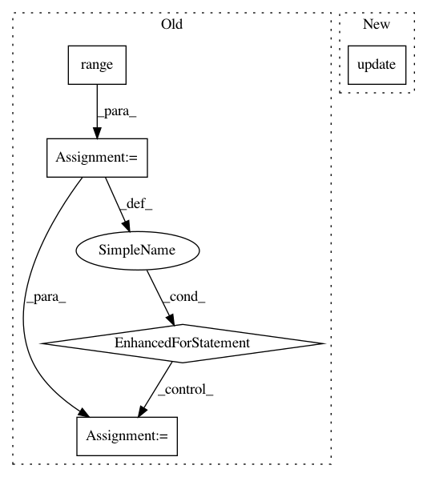

0f7bacc26eec44c9f00f5d7666c1f87f0e051ce2,search/management/commands/post_dirty_sounds_to_solr.py,Command,handle,#Command#,37
Before Change
num_correctly_indexed_sounds = 0
slice_size = 1000
for i in range(0, num_sounds, slice_size):
console_logger.info("Adding %i sounds to solr, slice %i", slice_size, i)
try:
// Get all sounds moderated and processed ok that has is_index_dirty
where = "sound.moderation_state = "OK" AND sound.processing_state = "OK" AND is_index_dirty = true " \
"AND sound.id > %s"
order_by = "sound.id ASC"
sounds_qs = Sound.objects.bulk_query_solr(where, order_by, slice_size, (i, ))
add_sounds_to_solr(sounds_qs)
num_correctly_indexed_sounds += slice_size
except SolrException as e:
console_logger.error("failed to add sound batch to solr index, reason: %s", str(e))
raise
logger.info("Finished posting dirty sounds to solr. %i sounds have been added/updated"
% num_correctly_indexed_sounds)
// Remove all those which are not processed or moderated ok and that are still in solr (should not happen)
After Change
num_correctly_indexed_sounds = add_all_sounds_to_solr(sounds_to_index)
if num_correctly_indexed_sounds == num_sounds:
sounds_to_index.update(is_index_dirty=False)
logger.info("Finished posting dirty sounds to solr. %i sounds have been added/updated"
% num_correctly_indexed_sounds)
In pattern: SUPERPATTERN
Frequency: 5
Non-data size: 5
Instances
Project Name: MTG/freesound
Commit Name: 0f7bacc26eec44c9f00f5d7666c1f87f0e051ce2
Time: 2017-11-10
Author: andres.ferraro@upf.edu
File Name: search/management/commands/post_dirty_sounds_to_solr.py
Class Name: Command
Method Name: handle
Project Name: dataiku/dataiku-contrib
Commit Name: 6eaab0148daf02fb02ac4ed1eca8d182b246e1f0
Time: 2020-04-03
Author: jeremy.greze@dataiku.com
File Name: googlesheets/python-connectors/googlesheets-sheet/connector.py
Class Name: MyCustomDatasetWriter
Method Name: flush
Project Name: scipy/scipy
Commit Name: 41da32116d1834958b5cc335c9ec9478b74ef01e
Time: 2014-06-15
Author: cairj3@mail2.sysu.edu.cn
File Name: scipy/cluster/vq.py
Class Name:
Method Name: _kmeans2
Project Name: home-assistant/home-assistant
Commit Name: 625319846c77b37a9f2a5ffcf8d3be311cd534fe
Time: 2016-10-03
Author: pascal.vizeli@syshack.ch
File Name: homeassistant/components/homematic.py
Class Name:
Method Name: _get_devices
Project Name: analysiscenter/batchflow
Commit Name: c15b97458069ea19aa0def4259264ae0c2b32644
Time: 2019-11-19
Author: dimonovez@gmail.com
File Name: batchflow/models/eager_torch/resnet.py
Class Name: ResNet
Method Name: body